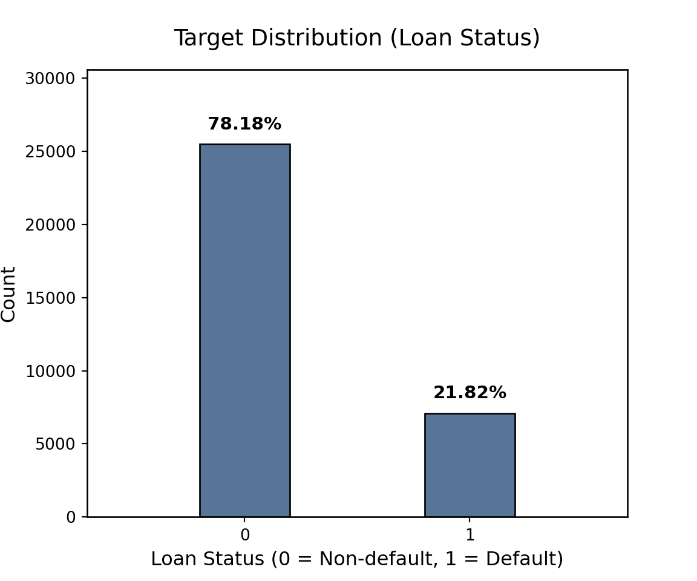
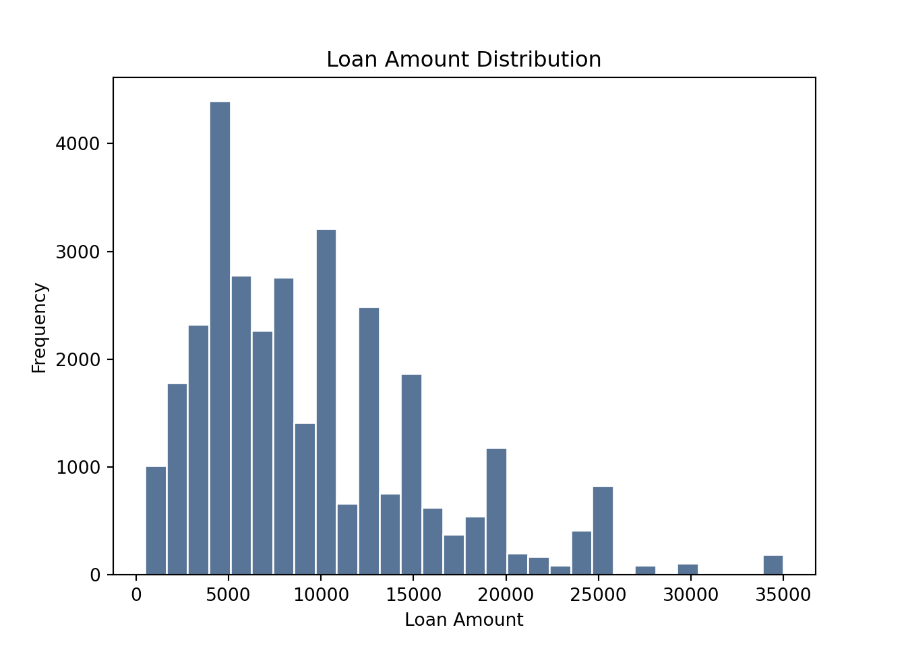
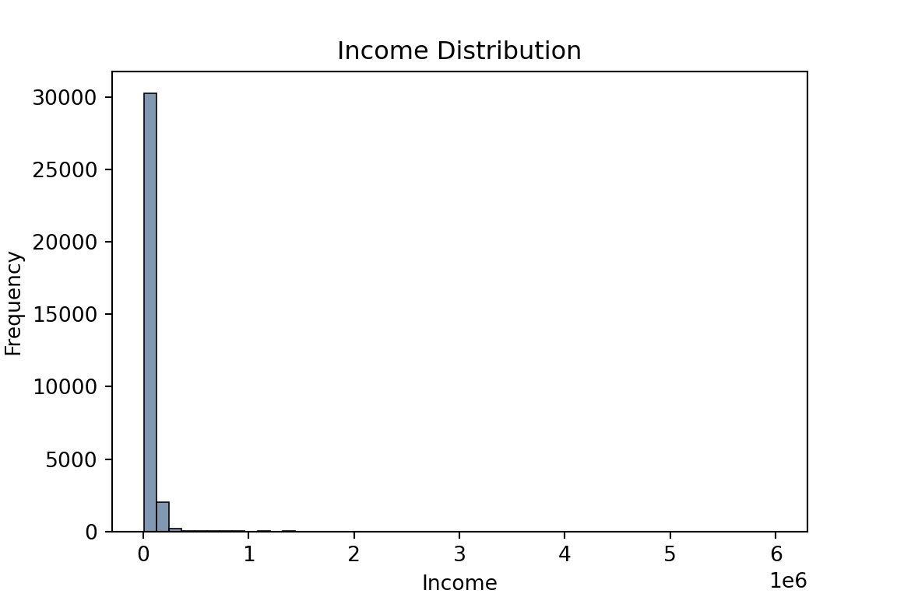
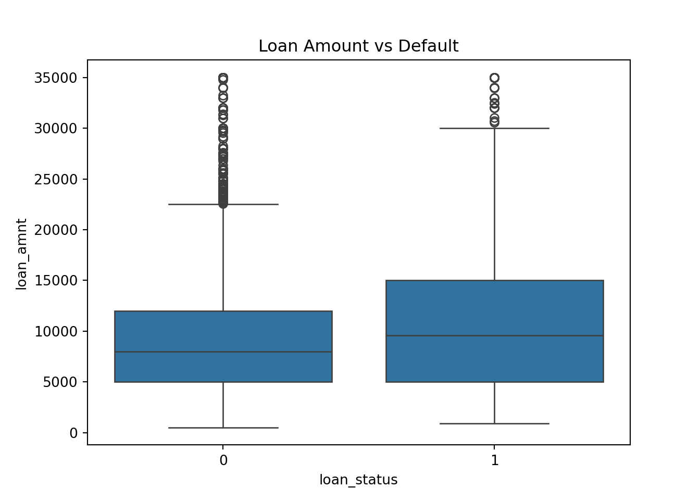

Evaluation of credit risk is vital for the financial services industry because, it is required to avoid risks and maintain compliance with regulations, organizations have to accurately predict a borrower’s likelihood of failure while re-payment. Typically, the financial institutions have uses methods statistical and rule-based techniques such as logistic regression, scoreboards, and rule-driven decision systems to assess credit score. These traditional methods are in use because those are comparatively clear, simple and easy to predict to stakeholders. Although, typical approaches are difficult to handle data processing in big and multilevel credit dataset. The latest development in machine learning has majorly enhance the capacity to evaluate organized financial data and generate more easy and precise interpretations. Nonlinear patterns and interactions between components that traditional statistical methods can be ignore or get using machine learning models. In addition to this, the banking sector is going away from complex rule-based frameworks for evaluating credit score to latest improved machine learning and toward more advanced machine learning systems that provide improved accuracy for prediction (Shreya & Pathak, 2025)[1]. So, these models are able to provide organizations to effectively analyze enormous quantities of statistical data and provide forecasting of probability of lenders defaulting credit score.
Many machine learning models are frequently getting attacked for being inaccessible even though having their predictive benefits. Because the in built decision-making system is hard to understand, complex algorithms like deep learning models and collective learning techniques are often referred to as “black box” mechanism. This lack of interpretability poses significant problems in highly regulated industries like banking and finance. So the majorly regulated organizations like financial services and banking get into vital issues due to absence of predictability in the process. Nowadays, there is a need for financial organizations have to ensure integrity in borrowing processes and offer explanations for automatic verdicts. According to Bussmann et al. (2020)[2], explainability is crucial for credit risk management as companies need to be able to explain and give the exact justification model predictions to stakeholders, consumers, and regulators. Similarly, de Lange et al. (2022)[3] emphasize in his paper the meaning of the “right to explanation,” which allows organizations to provide comprehensible explanations for machine credit assessments.
Nowadays, Explainable Artificial Intelligence (XAI) approaches are extensively used by working professionals and researchers mainly to improve the easy accessibility of machine learning models for to overcome this obstacles. The goal of explainable methods is to give insights on how models provide results while ensuring high accuracy in forecasting. Oyeyemi et al. (2025)[4] claim that by combining explainable AI method with machine learning models, businesses can make an algorithm that are precise and easy to understand, boosting confidence in digital automatic economic decision-making system. Additionally, recent research also shows the how artificial intelligence in advancing help credit decisions-making process with their developing role for different financial organizations across the globe. In one example, McKinsey & Company (2025)[5] describes how AI-driven solutions are transforming the entire credit process by improving automatic decision-making and more efficient data analysis. In a similar vein, Kubam (2024)[6] focuses attention to new cognitive credit assessment platforms that allow for real-time decision-making about finances by merging technology with comprehension. So, these modern advancements indicates how credit risk management techniques plays vital role in bringing together straight decision structures with complex data assess technology for today.
In this study, the Light Gradient Boosting Machine (LightGBM) algorithm uses to create an explainable credit risk assessment system. LightGBM is a dynamic gradient boosting method that is now commonly used in machine learning applications because of it has excellent predictive accuracy, adaptability, as well as efficiency when dealing with hierarchical datasets. The approched model is applies to a credit risk dataset that includes customer income, history of credit, and demographic information such as address and travel. It is built in Python. The main goals are of this model is predicting the possibility of defaulters who are failing to pay loans and highlighting the important factors which are affecting on credit risk result.
This research uses SHAP (SHapley Additive Explanations), an explainable method that evaluates each feature’s role in contribution to the model result outcome in order to evaluate machine learning projections and improve model accessibility. Here the benefit of SHAP are both local interpretability, which explains particular forecasts, and global interpretability, which explains overall characteristic significance throughout the dataset. The suggested structure is for both exact credit risk forecasting and insightful statistical model analysis by integrating LightGBM with SHAP explanations methods.The recommended credit risk evaluation methodology has some important steps. The dataset is initially collect and preprocess by encoding category variables then handling with missing values. Secondly, to assess prediction performance, later the dataset is split into training and testing subsets. After that, the collected training data is utilized to train the LightGBM classification. Fourth, there are various metrics including accuracy, precision, recall, F1-score, and ROC-AUC are used to determine the model’s forecasting ability for the dataset. For the purpose to assess the forecasts of models and determine the most important variables impacting credit risk, SHAP-based explanations are finally use.
The objective of this research is to show how new advanced algorithms can work for machine learning and can merge with explainable methodologies to generate efficient, transparent, and consistent credit risk assessment solutions for the system. The suggested model intends to improve transparency of making decisions and aid the banking area in better comprehending the variables influencing customers credit of default by bringing the accessibility that comes from SHAP with the ability to forecast of LightGBM model.
2. Methods
2.1 Mathematical Fundamentals
2.1.1 Formulation of Binary Classification :
Predicting if a borrower will fail to repay on a loan is an issue of binary classification that can be used to generate credit risk prediction. Suppose that the dataset is defined as where each observation \((x_i, y_i)\) has a feature vector \((x_i)\) and a target label \(y_i \in \{0, 1\}\) representing low or high risk (Default/Non-default). The predicted probability of default is: \[\hat{y}_i = P(y_i = 1 | x_i)\]
2.1.2 Gradient Boosting Model Equation :
In this study predictive model is use based on gradient boosting and uses LightGBM in its implementation. To boost the precision of forecasts, the model integrates many decision trees: \[f(x) = \sum_{k=1}^{K} f_k(x)\]
where \(f_k(x)\) indicates the projection from the k-th decision tree.
2.1.3 LightGBM Purpose Function :
LightGBM optimizes tree-based models by eliminating both regularization and loss: \[\mathcal{L} = \sum_{i=1}^{n} l(y_i, \hat{y}_i) + \Omega(f)\]
where , \(l(y_i, \hat{y}_i)\) is the loss function here and \(\Omega(f)\) is a regularization term that controls the level of complexity of the model.
2.1.4 SHAP Explainability Equation :
This study applies SHAP values from collaborative game theory for analyzing the model predictions. Each characteristic is given a significance evaluation by SHAP that shows how much it contributes to the prediction. The final prediction can be written as: \[f(x) = \phi_0 + \sum_{j=1}^{p} \phi_j\]
where, \(\phi_j\) shows how feature 𝑗 contributed to the prediction.
2.2 Assumptions
This study focuses on the dataset’s \(\mathcal{D} = \{(x_i, y_i)\}_{i=1}^{n}\) exact representation of borrowers demographic and financial details that are important to credit risk prediction. Here \(x_i \in \mathbb{R}^p\) is shows borrower characteristics and \(y_i \in \{0, 1\}\) indicates the status of a loan.
Perhaps the conditional likelihood \(P(y=1|x)\) can be calculated using machine learning models like LightGBM, Random Forest, and Logistic Regression. It is assumed this characteristic parameters have little multicollinearity as well as significant associations with the target variable.
The corresponding function is obtained by the models \(f(x): \mathcal{X} \to \mathcal{Y}\) that minimizes a loss function \(L(y, f(x))\) during model training.
Finally, SHAP values \(\phi_i\) are considered to give insightful explanations by calculating each characteristic’s influence to the model’s predictions.
2.3 Model Evaluation Metrics
This study use a variety of evaluation parameters to develope the unbalanced financial information to evaluate the LightGBM classification accuracy on this credit risk dataset. These measures give multiple perspectives of model performance because a negative outcome (being unable to identify a defaulting borrower) is much more expensive for a bank than an inaccurate positive.
2.3.1 Accuracy
The proportion of accurately expected instances to all instances is called accuracy. For this dataset, a “dumb” model that predicts “No Default” for all individuals would however obtain accuracy, given its appealing nature. \[
\text{Accuracy} = \frac{TP + TN}{TP + TN + FP + FN}
\]
2.3.2 Recall (Sensitivity)
For this study, recall is an important statistic. It evaluates how well the model can find every possible defaulting member. High recall assures that the model identifies the highest percentage of instances of high risk for our dataset, where the “Default” category is the low-risk. \[
\text{Recall} = \frac{TP}{TP + FN}
\]
2.3.3 Precision
Precision in credit risk relates to the percentage of expected defaults that really occurred. High accuracy maintains relationships with clients sustained by avoiding the bank from prematurely rejecting credit to “secure” borrowers. \[
\text{Precision} = \frac{TP}{TP + FP}
\]
2.3.4 F1-Score
Precision and recall’s harmonic median is the F1-Score. It presents an equal compromise between the two, which is important considering the conflict between ignoring inadequate credit (Recall) and refusing outstanding ones (Precision). \[
F_1 = 2 \cdot \frac{\text{Precision} \cdot \text{Recall}}{\text{Precision} + \text{Recall}}
\]
2.3.5 ROC-AUC
The model’s capacity to classify between classes over all potential thresholds is by the Area Under the Receiver Operating Features Curve (ROC-AUC). The model uses particular likelihood threshold used, a high ROC-AUC (e.g., \(> 0.90\)) in this credit assessment shows that the model is efficient at rating a random defaulting customer higher than a random non-defaulter.
2.4 LightGBM Model Implementation in Python
2.4.1 Hyperparameter Selection :
2.4.2 SHAP Integration :
3. Analysis and Results
3.1 Data Ingestion :
The pandas package in Python was used to load the dataset and skimpy package is to get consice exploratory summeries. A dataframe called credit1 was created by reading the file credit_risk_dataset .csv. The dataset was first explored by examining column data types, previewing the first few records, data analysis and determining its dimensions. To guarantee effective ingestion and comprehend variable composition, the dataset structure was validated using the .shape(), .head(), and.info() functions.
Code
import osimport pandas as pdfrom skimpy import skimimport seaborn as snsdef find_git_root(start=None):if start isNone: start = os.getcwd() path = os.path.abspath(start)whileTrue:if os.path.isdir(os.path.join(path, ".git")):return path parent = os.path.dirname(path)if parent == path:raiseFileNotFoundError("No .git directory found — are you inside a Git repository?") path = parentrepo_root = find_git_root()datasets_path = os.path.join(repo_root, "datasets")# Reading the datafile credit_risk_dataset.csvcredit_path = os.path.join(datasets_path, "credit_risk_dataset.csv")credit1 = pd.read_csv(credit_path)
3.2 Data Description :
This project research is using the Credit Risk Dataset, which contains 32,581 borrower records and twelve variables related to financial, credit history, and demographic details. A borrower’s likelihood of defaulting (1) or not (0) is indicated by the binary target variable loan_status. The dataset includes both quantitative and qualitative factors, including income, loan amount, interest rate, length of work, home ownership status, and loan purpose. It is perfect for applying LightGBM and evaluating explainable.
Feature
Count
Unique
Top
Freq
Mean
Std Dev
Min
25%
50%
75%
Max
person_age
32581
–
–
–
27.73
6.35
20
23
26
30
144
person_income
32581
–
–
–
66074.85
61983.12
4000
38500
55000
79200
6000000
person_home_ownership
32581
4
RENT
16446
–
–
–
–
–
–
–
person_emp_length
31686
–
–
–
4.79
4.14
0
2
4
7
123
loan_intent
32581
6
EDUCATION
6453
–
–
–
–
–
–
–
loan_grade
32581
7
A
10777
–
–
–
–
–
–
–
loan_amnt
32581
–
–
–
9589.37
6322.09
500
5000
8000
12200
35000
loan_int_rate
29465
–
–
–
11.01
3.24
5.42
7.90
10.99
13.47
23.22
loan_status
32581
–
–
–
0.22
0.41
0
0
0
0
1
loan_percent_income
32581
–
–
–
0.17
0.11
0.00
0.09
0.15
0.23
0.83
cb_person_default_on_file
32581
2
N
26836
–
–
–
–
–
–
–
cb_person_cred_hist_length
32581
–
–
–
5.80
4.06
2
3
4
8
30
Dataset Dimensions -
Attribute
Details
Observations (Rows)
32,581
Features (Columns)
12
Target Variable
loan_status
Target Variable -
Class Value (loan_status)
Description
1
High Risk (Default)
0
Low Risk (Non-Default)
3.3 Packages :
Code
packages <-c("tidyverse", "skimr", "knitr", "ggthemes", "ggrepel", "dslabs")# Load Libraries quietlyinvisible(lapply(packages, library, character.only =TRUE))# Set seed for reproducibilityset.seed(123)# show packagescat("Required Packages Loaded:", paste(packages, collapse =", "))
Complete data is present in all other variables. Preprocessing will use median imputation to handle these missing values in order to maintain the robustness of the distribution.
3.4.2 Summary Statistics :
This summary presents an in-depth review of the number distribution, primary trend, and classification patterns of the dataset in order to identify data inconsistencies and anomalies. When continuing in to the encoding and analysis steps, it works as an assessment method to verify a variety of financial variables, such as salary and interest rates.
Code
import pandas as pd# Show all columnspd.set_option('display.max_columns', None)pd.set_option('display.width', None)# Compute descriptive statisticsdesc = credit1.describe(include='all')# Round numeric values for clean displaydesc = desc.round(2)# Transpose so columns become rowsdesc = desc.T# Fill NaN for categorical stats to keep table cleandesc = desc.fillna('')# Display row-by-row tableprint(desc.to_string())
Here, Label encoding uses to transform categorical data, such as property ownership (person_home_ownership) and loan intent (loan_intent), into numerical values to enable machine learning analysis with LightGBM model. When encoding quantitative labels convert into distinct integer variables, then this conversion helps to the model to execute mathematical computations on non-numeric characteristics. The replica of the dataset use to guarantee data accuracy.
Code
import pandas as pdfrom sklearn.preprocessing import LabelEncoder# Copy the datasetdf = credit1.copy()# Encode categorical variablescategorical_cols = df.select_dtypes(include=['object']).columnsle = LabelEncoder()for col in categorical_cols: df[col] = le.fit_transform(df[col].astype(str))# Select first 5 rows for displaytable = df.head()# round float numbers for neat displaytable = table.round({'loan_int_rate': 2, 'loan_percent_income': 2, 'person_emp_length': 1})# Display clean tableprint(table.to_string(index=False))
3.4.4 Splitting Dataset (Test and Training Subset) :
This study divides the credit dataset into training and testing subsets to assess the predictive accuracy of the model. The feature variables are stored in X and the target variable loan_status is recorded in y. This split uses 80% of the data for training and 20% for testing purpose the train_test_split() function, so this model assess on data that has not been tested.
Code
from sklearn.model_selection import train_test_split# Define features and targetX = df.drop("loan_status", axis=1)y = df["loan_status"]# Perform the splitX_train, X_test, y_train, y_test = train_test_split( X, y, test_size=0.2, random_state=42, stratify=y)# Print results print(f"Total dataset: {df.shape}\nTraining set size: {X_train.shape[0]}\nTesting set size: {X_test.shape[0]}")
Total dataset: (32581, 12)
Training set size: 26064
Testing set size: 6517
3.4.5 Target Distribution :
This study analyze target variable loan_status To show the distribution of default and non-default loan cases in the used dataset. I use value_counts() function to calculate the frequency counts and percentage percentages of each class using Python’s Panda library. The Matplotlib Python’s library uses to create a bar chart that depicted the count of borrowers who were in default and non-default list. This study analysis gives insight into the overall credit risk pattern and helps with appropriate model evaluation metrics and training decision-making.

The histogram shows the skewness and distribution of the amount of loans proposed across 30 categories, offering an accurate representation of customer’s basic credit levels and financial dimensions prior to model validation.
<<<<<<< Updated upstream

Figure 1: Distribution of Loan Amounts
=======
<matplotlib.colorbar.Colorbar object at 0x15c0eff80>
([<matplotlib.axis.XTick object at 0x15c311d60>, <matplotlib.axis.XTick object at 0x15c228ce0>, <matplotlib.axis.XTick object at 0x15c247110>, <matplotlib.axis.XTick object at 0x15c3638c0>, <matplotlib.axis.XTick object at 0x15c3629f0>, <matplotlib.axis.XTick object at 0x15c388800>, <matplotlib.axis.XTick object at 0x15c389190>, <matplotlib.axis.XTick object at 0x15c389a60>], [Text(0, 0, 'person_age'), Text(1, 0, 'person_income'), Text(2, 0, 'person_emp_length'), Text(3, 0, 'loan_amnt'), Text(4, 0, 'loan_int_rate'), Text(5, 0, 'loan_status'), Text(6, 0, 'loan_percent_income'), Text(7, 0, 'cb_person_cred_hist_length')])
([<matplotlib.axis.YTick object at 0x15c3107d0>, <matplotlib.axis.YTick object at 0x15c311f40>, <matplotlib.axis.YTick object at 0x15c38a840>, <matplotlib.axis.YTick object at 0x15c38b230>, <matplotlib.axis.YTick object at 0x15c38bc20>, <matplotlib.axis.YTick object at 0x15c38b7d0>, <matplotlib.axis.YTick object at 0x15c389e80>, <matplotlib.axis.YTick object at 0x15c3a4440>], [Text(0, 0, 'person_age'), Text(0, 1, 'person_income'), Text(0, 2, 'person_emp_length'), Text(0, 3, 'loan_amnt'), Text(0, 4, 'loan_int_rate'), Text(0, 5, 'loan_status'), Text(0, 6, 'loan_percent_income'), Text(0, 7, 'cb_person_cred_hist_length')])
>>>>>>> Stashed changes
This graph shows distribution of independant variable person_income. Income is one of the most important predictors of creditworthiness and debt-repayment capacity in credit risk assessment.
Code
import seaborn as snsimport matplotlib.pyplot as pltplt.figure(figsize=(6,4))sns.histplot(credit1["person_income"], color='#587597', bins=50)plt.title("Income Distribution")plt.xlabel("Income")plt.ylabel("Frequency")plt.show()

A histogram represents age demographic frequency distribution of the person_age variable. Since people with secure employment and good credit histories are more likely to return loans, age may have an effect on credibility.
This heatmap represents the linear correlations between numerical data to find characteristics that are highly correlated with the risk of credit and possible multicollinearity. So, can find out which economic factors have the greatest impact on the expected outcomes of the model through analyzing their association intensity.

3.5 Train LightGBM Model :
This study implements a LightGBM model Classifier for developing a strong gradient-boosted decision tree model with 300 estimators and a managed learning rate and depth of 7. This was done to successfully balance the model’s complexity and flexibilty to avoid overfitting the data on the credit risk dataset. This implementation seems to have the best balance of optimum computational performance while including associations which are not linear between financial data.
Code
import lightgbm as lgb# Initialize LightGBM Classifier with tuned hyperparameterslgb_model = lgb.LGBMClassifier( n_estimators=300, learning_rate=0.05, max_depth=7, num_leaves=31, min_child_samples=20, subsample=0.8, colsample_bytree=0.8, reg_alpha=0.1, reg_lambda=0.1, random_state=42, verbose=-1# Recommended to keep report output clean)# Train without early stopping # Note: Ensure X_train and y_train have been defined in a previous steplgb_model.fit(X_train, y_train)
1. Shreya, & Pathak, H. (2025). Explainable artificial intelligence credit risk assessment using machine learning. https://arxiv.org/abs/2506.19383
2. Bussmann, N., Giudici, P., Marinelli, D., & Papenbrock, J. (2021). Explainable machine learning in credit risk management. Computational Economics, 57(1), 203–216.
3. De Lange, P. E., Melsom, B., Vennerød, C. B., & Westgaard, S. (2022). Explainable AI for credit assessment in banks. Journal of Risk and Financial Management, 15(12), 556.
4. Oyeyemi, D. O., Okosieme, O. O., Idowu-Kunlere, O., Julius, E. A., & Nwinyi, I. P. (n.d.). Explainable AI for credit risk assessment: Integrating machine learning with business analytics.